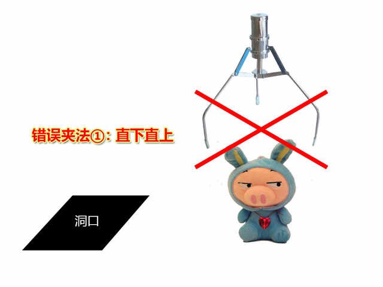
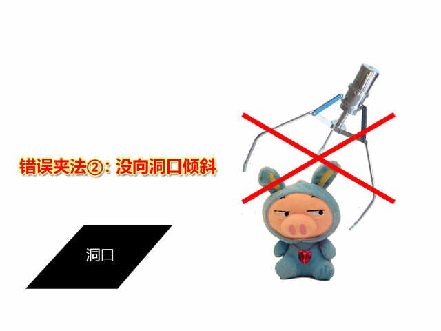
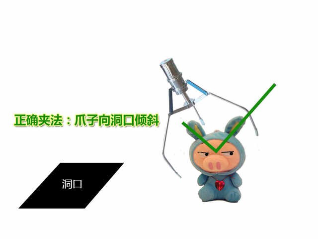
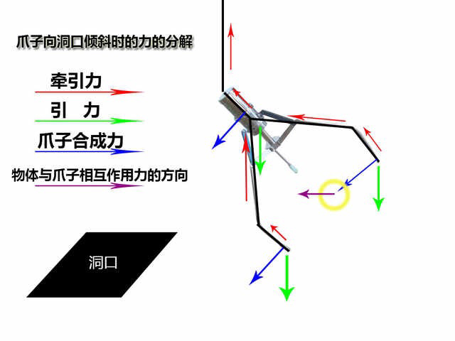
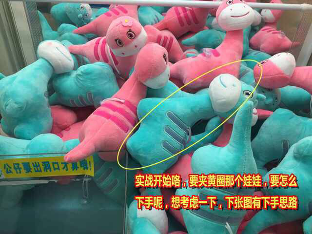
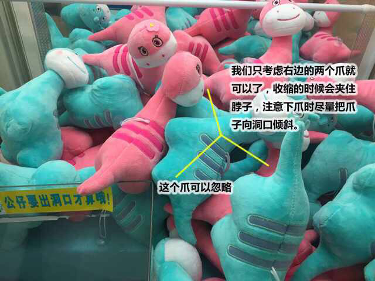
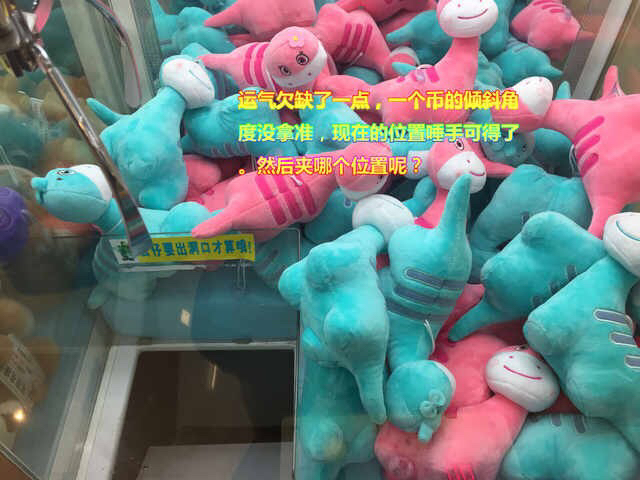
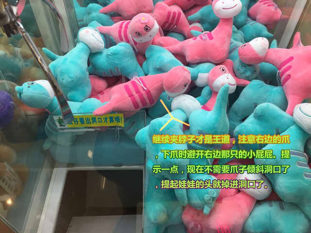
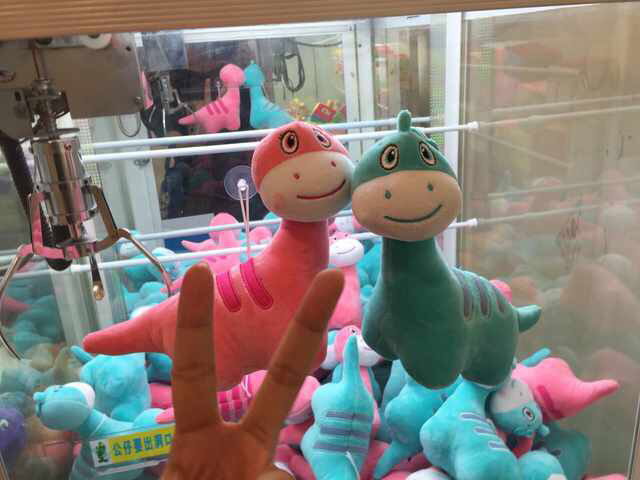

声明两点：
一、方法和夹的位置不是唯一，可能我的方法可以夹到，你的下爪位置也可能夹到，以下简单教学仅作参考和抛砖引玉。但所有夹娃娃八九不离十的是——通过拖、拉、甩和惯性把娃娃带出洞口(注意，我不是用夹这个字)。
二、不要质疑我为什么只夹离洞口近的，夹娃娃说白了就是前人栽树后人乘凉，当然，你可以把最远的慢慢拖到洞口，但成本就超过预期还有更多不可控的因素，尤其对于新手。我也试过花了5个币把大娃娃拖到洞口，袋子剩下最后一个币，没夹出，还送了一个chance位置给排在后面的情侣顺手牵羊了。所以，瞄好哪个机子的娃娃离洞口近的，才是下手的好时机，我一般定格在3~5块入手一个娃娃最好。
准备篇：
夹娃娃，首先你得要懂得娃娃机怎么操作，娃娃机爪子的设定。判断是不是黑机(弱爪机或次数机)一般来说，爪子夹娃娃，直上直下可以把娃娃夹起，然后到了最高点会自动松爪，娃娃掉回原地的话，这种爪是正常爪，也叫良心机。因此，你到了一个新地点夹娃娃，要花1~2个币就可以测试娃娃机是不是做了手脚，否则碰到弱爪机和次数机你就亏大了。
重申一次，爪子直上直下能夹起娃娃，到顶点自动松爪的，绝对不是黑机，反而是正常机。
理论篇：
前面提到，夹娃娃，别指望直上直下夹了娃娃，爪子会牢牢抓住然后送回洞口。夹娃娃秘诀在于拖、拉、甩、卡位和惯性带娃娃出洞口。
理论归理论，但实战又要看具体情况判断。夹娃娃成败与否，取决于下爪后的位置。
有几点你必须记住：
1，直下直上99.999999%掉回原位(人形娃娃就是这样，方形和不规则的娃娃会翻滚)，除非你运气特别好，刚好碰上次数机设定的第n次有力的爪，但夹娃娃我们追求是低成本高回报，补刀流对于夹娃娃毫无提高和乐趣可言的。
2，夹颈夹身不夹头，或者屁股大不夹屁股，头大不夹头。对于人形娃娃，最好的下爪位置就是娃娃的手臂和躯体跟爪子夹紧，这就是最完美的下爪位置。凡事不是绝对，并不一定夹头就是错，反而有时需要把爪子抬一下头调整位置等等。
3，投币前你有无限多的时间去分析下爪位置和受力分解。所以，先周长计划好再投币，而不是先投币再急忙下决定。
4，爪子有分固定爪和甩爪，旧式的娃娃机都是可以甩爪，但爪力弱点，由于可以甩爪，就可以通过不停摇操纵杆来调整爪子的三个爪的分布和下爪后容易形成很大的角度，角度越大，起爪时甩力造成的惯性越大。固定爪顾名思义，你很难甩爪，甩半天只能改变三只爪的分布，然而下爪后很难跟娃娃形成一个大的倾斜角度，角度小了惯性力就弱了，但这种娃娃机的爪相对甩爪机会强一点。
我个人偏向玩可甩爪的娃娃机，因为不至于你把10秒时间都浪费在调整爪子，可以腾出时间调整落点和卡位。视频中有一个红色猪猪侠就是固定爪，而且爪有点坏的，摇半天都调整不到爪子分布。
图解篇：








